17. oktoober 2026
Jõhvi Kontserdimaja
Ida-Virumaa noorte tunnustusgala
Ida-Virumaa noorte tunnustusgala toob kokku aktiivsed noored, noorte toetajad, organisatsioonid ja kogukonna esindajad, et märgata ning tunnustada noorte panust Ida-Virumaa arengusse.
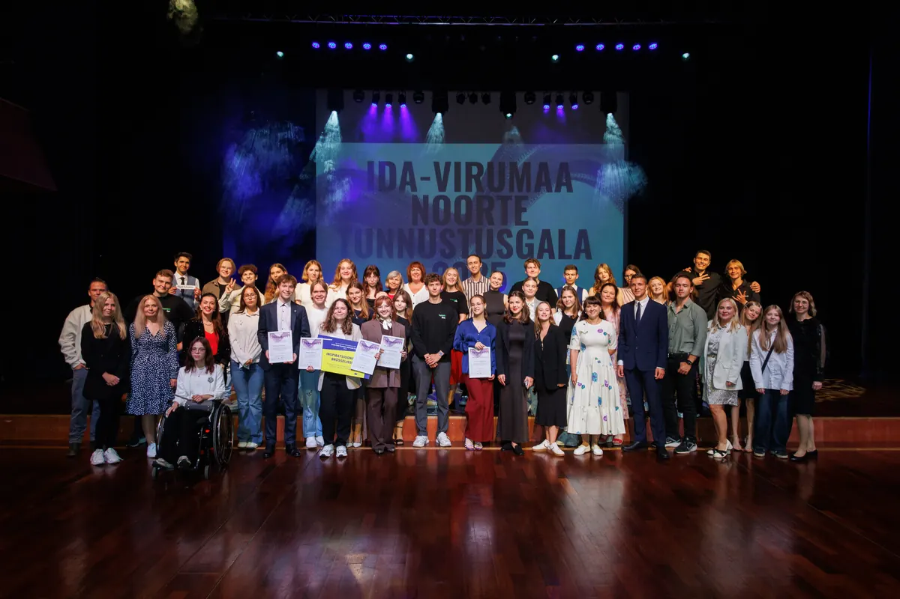
17.10
Jõhvi
Pidulik tunnustusõhtu
Jõhvi Kontserdimaja
Kuupäev
17. oktoober 2026
Asukoht
Jõhvi Kontserdimaja
Korraldaja
MTÜ Noortealgatuste Tugi
SÜNDMUSEST
Mis on noorte tunnustusgala?
Gala on õhtu, kus noorte saavutused, julgus, loovus ja panus kogukonda saavad tähelepanu, mida need väärivad.
Ida-Virumaal on nii palju noori, kelle tegudest, ideedest ja saavutustest võiks rääkida palju rohkem, kui seni räägitakse. Sageli jäävad just need lood varju ja meie tahame seda muuta.
Ida-Virumaa noorte tunnustusgala annab Ida-Virumaa noortele võimaluse särada. Tunnustame aktiivseid, ettevõtlikke ja silmapaistvaid noori, aga ka inimesi, kes seisavad nende kõrval ja toetavad nende arengut ning algatusi.
Gala kaudu tahame tuua nähtavale head eeskujud, jagada noorte saavutuste lugusid ning innustada veel rohkemaid noori julgelt kogukonnaelus kaasa lööma. Sest iga tunnustatud noor on ka väike samm selle poole, et Ida-Virumaast räägitaks kui piirkonnast, kus sünnivad julged ideed ja tegusad inimesed.
Tunnustame. Inspireerime. Ühendame.
Kandidaatide esitamiseks on jäänud
Kohtume 17. oktoobril 2026
00
Päeva
00
Tundi
00
Minutit
00
Sekundit
GALAÕHTU
Rohkem kui auhindade üleandmine
See on pidulik kohtumine, kus noorte lood, saavutused ja tulevikuideed saavad üheks inspireerivaks õhtuks.
Tunnustamine
Toome lavale noored, kelle tegevus ja saavutused väärivad märkamist.
Inspiratsioon
Jagame lugusid, mis julgustavad teisi noori oma ideid ellu viima.
Ühine õhtu
Ühendame noored, kogukonnad ja toetajad pidulikus ning soojas õhkkonnas.
KATEGOORIAD
Tunnustuskategooriad
Kandidaate saab esitada kaheteistkümnes kategoorias, mis toovad esile noorte mitmekülgse panuse kultuuri, spordi, hariduse ja kogukonna arengusse.
Aasta noormuusik
Noor, kes on silma paistnud muusika loomise, esitamise või arendamisega ning rikastanud kultuurielu oma loomingulisuse ja tegevusega.
Aasta noorvabatahtlik
Noor, kes on vabatahtliku tegevusega panustanud kogukonda, aidanud teisi või algatanud ühiskondlikult olulisi tegevusi.
Aasta noorsportlane
Noor, kes on saavutanud silmapaistvaid tulemusi spordis ja olnud eeskujuks aktiivse ning pühendunud sportliku tegevusega.
Aasta noorkunstnik
Noor, kes on silma paistnud visuaalse, kaasaegse või muu loomingulise kunstilise tegevusega ning väljendanud end omanäoliselt ja loovalt.
Aasta noor visuaalne looja
Noor, kes on silma paistnud fotograafia, video- või filmiloominguga ning kelle visuaalsed tööd on pälvinud tähelepanu või inspireerinud teisi.
Aasta noortantsija
Noor, kes on silma paistnud tantsuvaldkonnas oma pühendumuse, loomingulisuse või esinemistegevusega.
Aasta noornäitleja
Noor, kes on silma paistnud näitlemise, lavalise tegevuse või etenduskunstiga ning panustanud kultuuri- või teatrivaldkonda.
Aasta noorjuht
Noor, kes on oma eestvedamise ja juhtimisoskustega panustanud kogukonna või organisatsiooni arengusse.
Aasta noor loodushoidja
Noor, kes on panustanud keskkonna, kliima, kestliku eluviisi ja maailmahariduse kaudu planeedi ning inimeste heaolu loomisesse.
Aasta noor õppur
Noor, kes on silma paistnud õppeedukuse, teadmishimu, enesearengu või aktiivse osalemisega haridus- ja teadustegevustes.
Aasta noorte tegu
Noor või noortegrupp, kes on algatanud ja ellu viinud silmapaistva ettevõtmise, projekti või tegevuse, millel on olnud positiivne mõju kogukonnale või noortele.
Aasta noor Euroopa väärtuste kandja
Noor, kes seisab oma tegude ja hoiakutega Euroopa väärtuste eest – demokraatia, inimõigused, võrdsus ja solidaarsus – ning innustab ka teisi neid järgima.
FOTOGALERII
Hetked, mis jäävad meelde
Lisa siia eelmise gala parimad fotod: laureaadid, esinejad, külalised, lavaprogramm ja kõige emotsionaalsemad hetked.
12 fotokohta
Klõpsa fotol, et avada see täissuuruses.
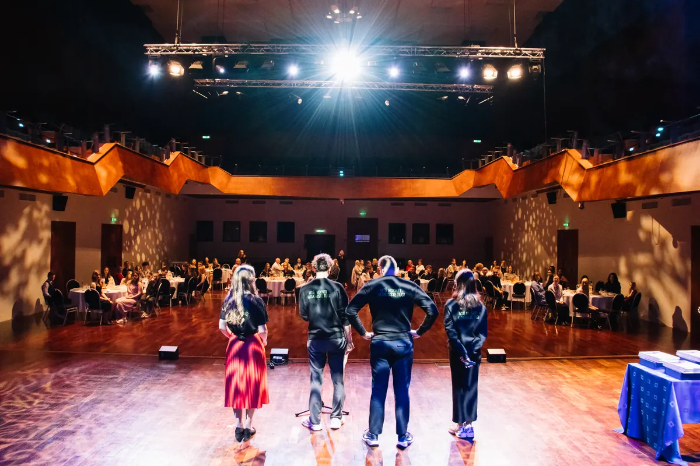
+ noorte tunnustusgala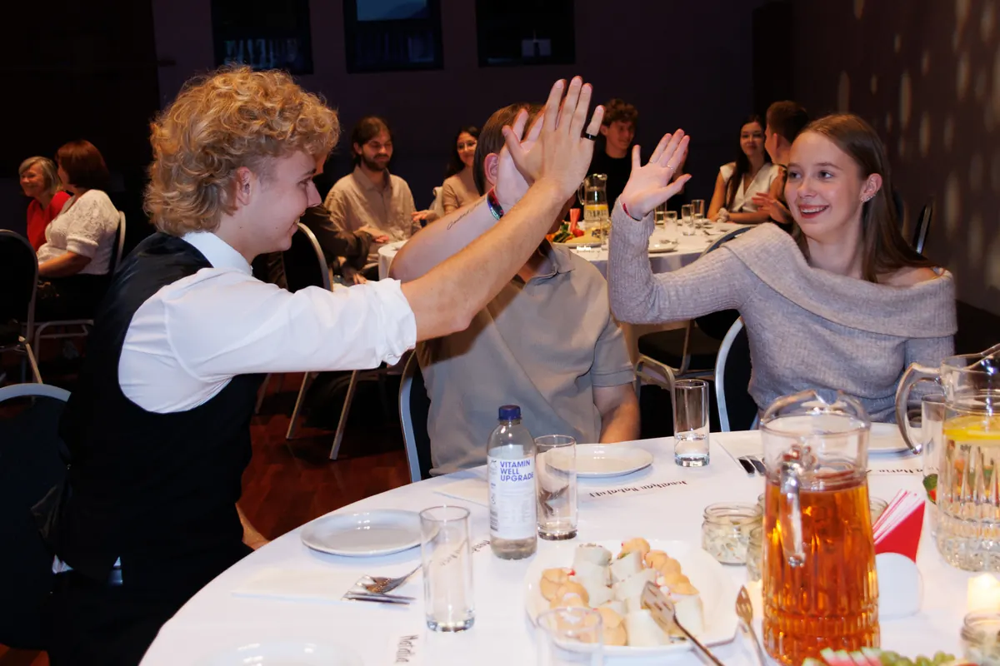
+ Külalised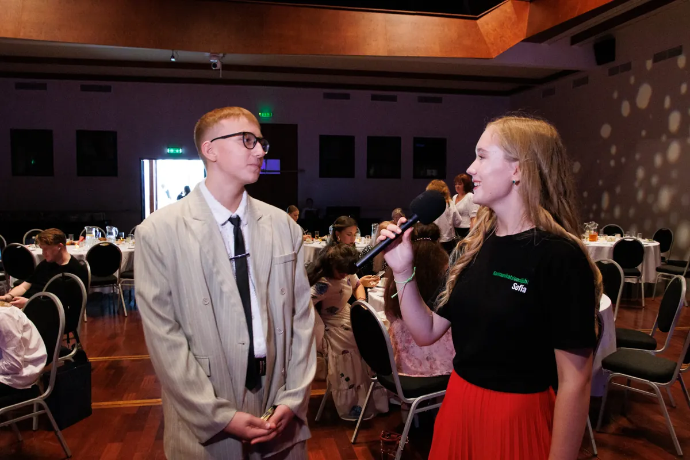
+ Hetked täis inspiratsiooni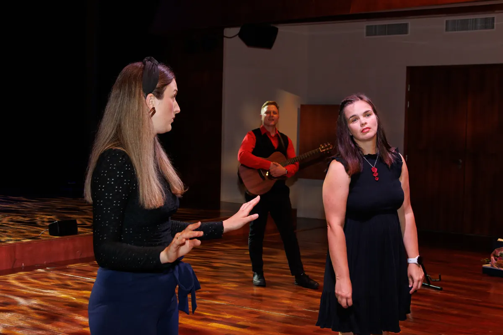
+ Improteater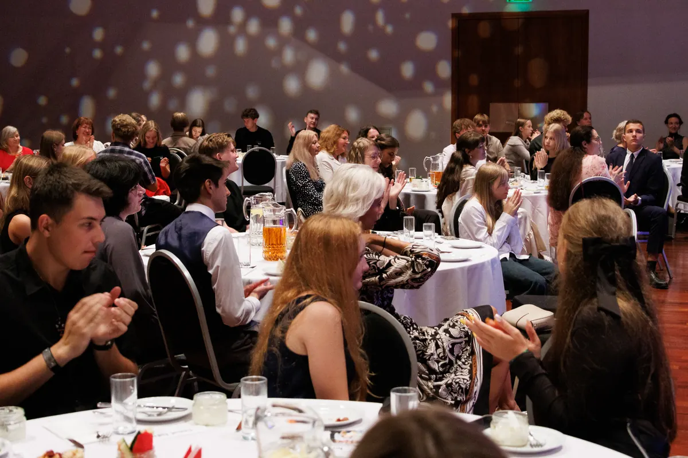
+ Pidulik õhtu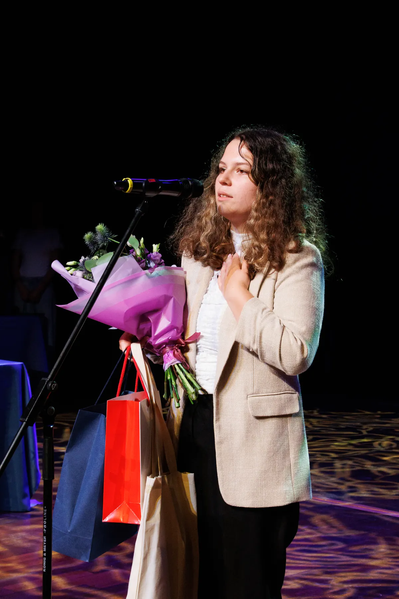
+ Laureaatide tunnustamine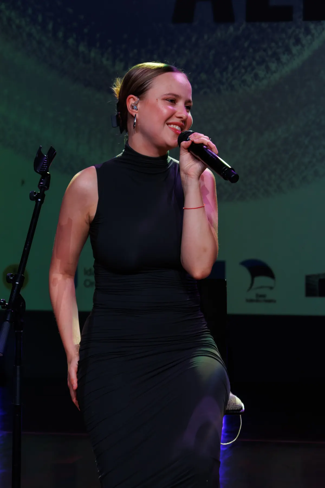
+ Peaesineja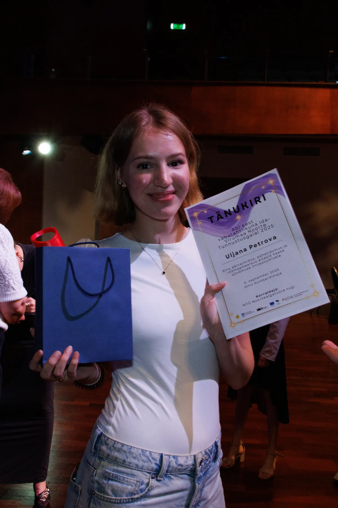
+ Vabatahtlikud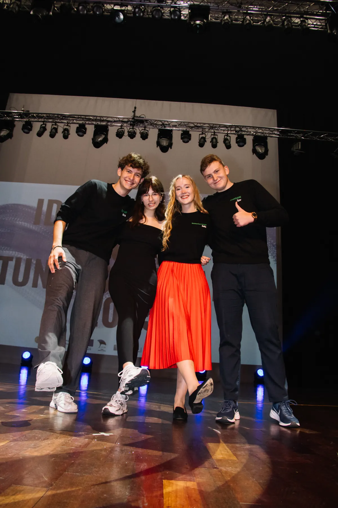
+ Korraldusmeeskond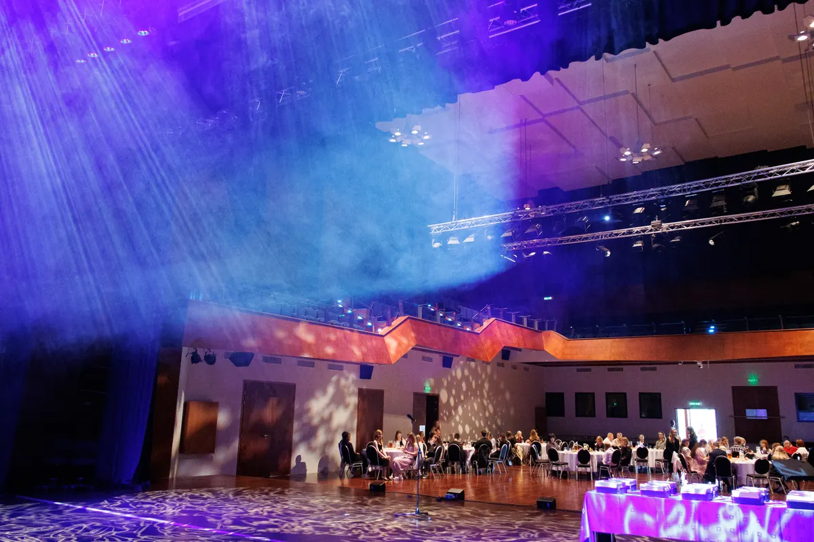
+ Gala õhkkond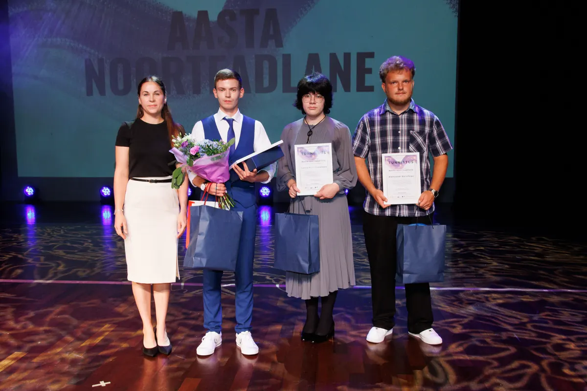
+ Autasustamine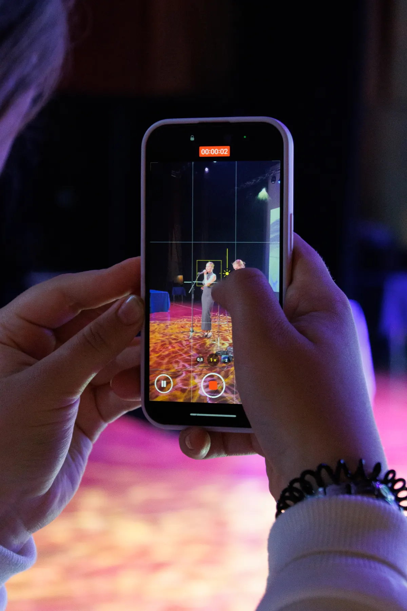
+ Mälestused
KANDIDAADI ESITAMINE
Kas tead tunnustamist väärivat noort?
Esita kandidaat Ida-Virumaa noorte tunnustusgalale. Enne vormi täitmist tutvu kategooriate ja kandidaatide esitamise tingimustega.
Ava kandidaadi esitamise vorm Kandidaadiks võib esitada ka iseennast.
KÜSIMUSED
juhatus@noortetugi.ee
Võta meiega ühendust
Küsimuste korral kirjuta meile. Aitame kandidaatide esitamise, kategooriate ja sündmuse korraldusega seotud küsimustes.